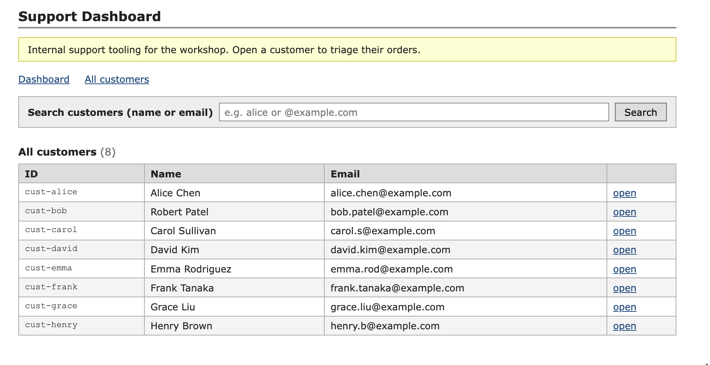
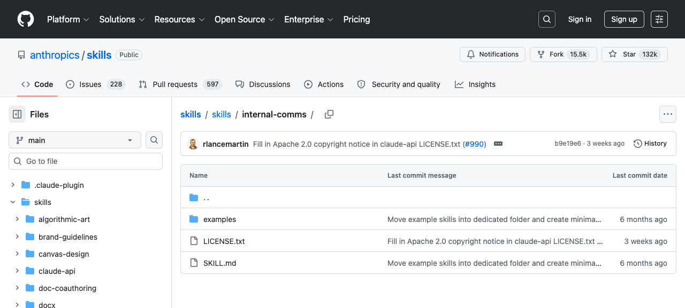
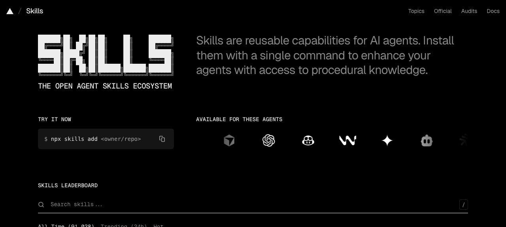
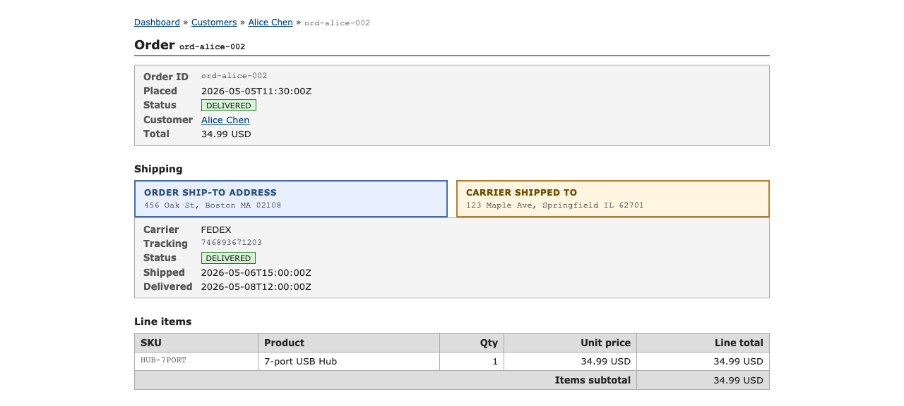

<!DOCTYPE html>
<html lang="en">
  <head>
    <meta charset="utf-8" />
    <meta name="viewport" content="width=device-width, initial-scale=1.0, maximum-scale=1.0, user-scalable=no" />

    <title></title>
    <link rel="stylesheet" href="dist/reveal.css" />
    <link rel="stylesheet" href="dist/theme/black.css" id="theme" />
    <link rel="stylesheet" href="plugin/highlight/zenburn.css" />
	<link rel="stylesheet" href="css/layout.css" />
	<link rel="stylesheet" href="plugin/customcontrols/style.css">


    <script defer src="dist/fontawesome/all.min.js"></script>

	<script type="text/javascript">
		var forgetPop = true;
		function onPopState(event) {
			if(forgetPop){
				forgetPop = false;
			} else {
				parent.postMessage(event.target.location.href, "app://obsidian.md");
			}
        }
		window.onpopstate = onPopState;
		window.onmessage = event => {
			if(event.data == "reload"){
				window.document.location.reload();
			}
			forgetPop = true;
		}

		function fitElements(){
			const itemsToFit = document.getElementsByClassName('fitText');
			for (const item in itemsToFit) {
				if (Object.hasOwnProperty.call(itemsToFit, item)) {
					var element = itemsToFit[item];
					fitElement(element,1, 1000);
					element.classList.remove('fitText');
				}
			}
		}

		function fitElement(element, start, end){

			let size = (end + start) / 2;
			element.style.fontSize = `${size}px`;

			if(Math.abs(start - end) < 1){
				while(element.scrollHeight > element.offsetHeight){
					size--;
					element.style.fontSize = `${size}px`;
				}
				return;
			}

			if(element.scrollHeight > element.offsetHeight){
				fitElement(element, start, size);
			} else {
				fitElement(element, size, end);
			}		
		}


		document.onreadystatechange = () => {
			fitElements();
			if (document.readyState === 'complete') {
				if (window.location.href.indexOf("?export") != -1){
					parent.postMessage(event.target.location.href, "app://obsidian.md");
				}
				if (window.location.href.indexOf("print-pdf") != -1){
					let stateCheck = setInterval(() => {
						clearInterval(stateCheck);
						window.print();
					}, 250);
				}
			}
	};


        </script>
  </head>
  <body>
    <div class="reveal">
      <div class="slides"><section  data-markdown><script type="text/template"><!-- .slide: class="drop" data-background-color="#003594" -->
<div class="" style="position: absolute; left: 0px; top: 0px; height: 700px; width: 960px; min-height: 700px; display: flex; flex-direction: column; align-items: center; justify-content: center" absolute="true">

<style>
  /* Formlabs palette
     deep blue   #003594  primary brand
     blue        #0762C8  accent
     light blue  #5db5ff  on-dark accent
     orange      #FF5A00  warning accent
     near-black  #232018  warm dark
     off-white   #FEFDF9  warm light
  */
  .reveal { font-family: -apple-system, "Inter", "Helvetica Neue", Arial, sans-serif; }
  .reveal h1, .reveal h2, .reveal h3 { color: #FEFDF9; letter-spacing: -0.01em; }
  .reveal a { color: #5db5ff; text-decoration: none; border-bottom: 1px solid rgba(93,181,255,0.4); }
  .reveal a:hover { color: #82AFE3; border-bottom-color: #82AFE3; }
  .reveal strong { color: #5db5ff; }
  .reveal blockquote { border-left: 4px solid #0762C8; background: rgba(7,98,200,0.08); padding: 0.6em 1em; }
  .reveal code { background: rgba(255,255,255,0.06); color: #FEFDF9; padding: 0.05em 0.35em; border-radius: 3px; }
  .reveal pre code { background: transparent; }
  .reveal table th { color: #5db5ff; border-bottom: 2px solid #0762C8; }
</style>

# Your Prompts Aren't Cooking?

## It's a Skill Issue

A hands-on workshop on agentic coding workflows.

<aside class="notes"><p>Welcome the room. Energy first, content second. ~30 seconds. Then move.</p>
</div></aside></script></section><section  data-markdown><script type="text/template"><!-- .slide: class="drop" -->
<div class="" style="position: absolute; left: 0px; top: 0px; height: 700px; width: 960px; min-height: 700px; display: flex; flex-direction: column; align-items: center; justify-content: center" absolute="true">

## About me

- Software dev. Embedded → cloud over the last 6 years.
- Full-stack now. Soft spot for backend & infra. Mediocre at frontend.
- Used Copilot since it was a fancy autocomplete.
- I rarely write code directly anymore — agents do the heavy lifting.

<aside class="notes"><p>Premise of the day: be a good foreman. Direct the agent without repeating yourself.</p>
</div></aside></script></section><section  data-markdown><script type="text/template"><!-- .slide: class="drop" data-background-color="#232018" -->
<div class="" style="position: absolute; left: 0px; top: 0px; height: 700px; width: 960px; min-height: 700px; display: flex; flex-direction: column; align-items: center; justify-content: center" absolute="true">

## Quick temperature check


> Who has tried Claude Code / Cursor / Copilot?
>
> Who got value? <!-- .element: class="fragment" -->
>
> Who got *frustrated*? <!-- .element: class="fragment" -->

<aside class="notes"><p>Tally hands. Most &quot;AI doesn&#39;t work for me&quot; stories are context problems, not model problems. That&#39;s the whole pitch for today.</p>
</div></aside></script></section><section  data-markdown><script type="text/template"><!-- .slide: class="drop" -->
<div class="" style="position: absolute; left: 0px; top: 0px; height: 700px; width: 960px; min-height: 700px; display: flex; flex-direction: column; align-items: center; justify-content: center" absolute="true">

## What you'll leave with

- A mental model for **why context matters** <!-- .element: class="fragment" -->
- Knowing when to use **`AGENTS.md`** vs **skills** vs **MCP** <!-- .element: class="fragment" -->
- A workflow for **building your own skills** <!-- .element: class="fragment" -->
- Seen how the pieces compose into a real workflow <!-- .element: class="fragment" -->
</div></script></section><section  data-markdown><script type="text/template"><!-- .slide: style="font-size: 0.85em" class="drop" -->
<div class="" style="position: absolute; left: 0px; top: 0px; height: 700px; width: 960px; min-height: 700px; display: flex; flex-direction: column; align-items: center; justify-content: center" absolute="true">

## The map


| Part | Topic | Demo |
|---|---|---|
| 1 | Context — what goes in the window | CLAUDE.md trim & split |
| 2 | Skills — using ones others made | Install + use a skill |
| ☕ | Break |  |
| 3 | Skills — building your own | `skill-creator` |
| 4 | MCP servers | Register + call a tool |
| 5 | Capstone | Compose all of the above |

<small>Demos are the spine. If we're behind, talk-time gets cut first.</small>
</div></script></section><section  data-markdown><script type="text/template"><!-- .slide: class="drop" data-background-color="#232018" -->
<div class="" style="position: absolute; left: 0px; top: 0px; height: 700px; width: 960px; min-height: 700px; display: flex; flex-direction: column; align-items: center; justify-content: center" absolute="true">

## Meet the demo-app


<!-- .slide: style="font-size: 0.88em" -->

A SvelteKit + Drizzle + SQLite app. Pretend backend of an order management system. Four tables: `customers`, `orders`, `order_items`, `shipments`.

**Clone it now.** You'll need it from Part 1 onward.

```sh
git clone https://github.com/dracz-fl/svelte-demo-app.git demo-app
cd demo-app && \
  bun install &&\
  cp .env.example .env &&\
  bun run db:push &&\
  bun run db:seed
```

Grab commands from here:

<https://bit.ly/kraft-formlabs-workshop>
</div></script></section><section  data-markdown><script type="text/template"><!-- .slide: class="drop" -->
<div class="" style="position: absolute; left: 0px; top: 0px; height: 700px; width: 960px; min-height: 700px; display: flex; flex-direction: column; align-items: center; justify-content: center" absolute="true">

## What's in the box

- Small project, with issues planted for the demo.
- `CLAUDE.md` — deliberately bloated (~340 lines). We trim it in Part 1.
- `workshop-context/triage/` — sample tickets. Used in Parts 3 and 5.
- `workshop-context/mcp/` — the MCP server we wire up in Part 4.


</div></script></section><section  data-markdown><script type="text/template"><!-- .slide: class="drop" data-background-color="#003594" -->
<div class="" style="position: absolute; left: 0px; top: 0px; height: 700px; width: 960px; min-height: 700px; display: flex; flex-direction: column; align-items: center; justify-content: center" absolute="true">

# Part 1

## Context

> Why does the agent say it can't find the file you literally just edited?

*This part answers that.*
</div></script></section><section  data-markdown><script type="text/template"><!-- .slide: class="drop" data-background-color="#003594" -->
<div class="" style="position: absolute; left: 0px; top: 0px; height: 700px; width: 960px; min-height: 700px; display: flex; flex-direction: column; align-items: center; justify-content: center" absolute="true">

## LLMs in one slide


LLMs are **fancy autocomplete on steroids.**

They predict the next token, one at a time.

<small>tokens ≠ characters. Different models tokenize differently — same prompt, different cost.</small> <!-- .element: class="fragment" -->
</div></script></section><section  data-markdown><script type="text/template"><!-- .slide: class="drop" -->
<div class="" style="position: absolute; left: 0px; top: 0px; height: 700px; width: 960px; min-height: 700px; display: flex; flex-direction: column; align-items: center; justify-content: center" absolute="true">

## The context window

> An LLM is a function. Input: a context window. Output: tokens.
>
> The window is finite. What goes in is what the model has to work with. Nothing else.
</div></script></section><section  data-markdown><script type="text/template"><!-- .slide: style="font-size: 0.9em" class="drop" -->
<div class="" style="position: absolute; left: 0px; top: 0px; height: 700px; width: 960px; min-height: 700px; display: flex; flex-direction: column; align-items: center; justify-content: center" absolute="true">

## What's in the context window?


| **Always in** | **Not in** — *unless loaded* |
|---|---|
| System prompt | Your codebase |
| AGENTS.md / CLAUDE.md | Your documentation |
| Conversation history | Git history |

> The agent only sees what gets loaded.

<small class="fragment">Common misconception: people *assume* the agent "knows" the repo. It doesn't.</small>
</div></script></section><section  data-markdown><script type="text/template"><!-- .slide: class="drop" -->
<div class="" style="position: absolute; left: 0px; top: 0px; height: 700px; width: 960px; min-height: 700px; display: flex; flex-direction: column; align-items: center; justify-content: center" absolute="true">

## What happens every turn?

```text
1. Harness builds context:
     system prompt + AGENTS.md + conversation history
2. Sends to model
3. Model returns next token
4. Token appended to context
5. Loop until model signals done
```

That's why you see streaming — one token at a time.
</div></script></section><section  data-markdown><script type="text/template"><!-- .slide: class="drop" -->
<div class="" style="position: absolute; left: 0px; top: 0px; height: 700px; width: 960px; min-height: 700px; display: flex; flex-direction: column; align-items: center; justify-content: center" absolute="true">

## AGENTS.md / CLAUDE.md

> What makes a good AGENTS.md / CLAUDE.md?

- Added to your conversation. **Keep it lean.**
- Project-specific instructions and context.
- A **curated** set of things the agent **can't easily discover on its own**.
- Behavioural guidlines [like these](https://github.com/multica-ai/andrej-karpathy-skills/blob/main/CLAUDE.md)
- Pointers to other resources for documentation, allowing the AI to read them on demand.

<small>📖 [humanlayer.dev — writing a good CLAUDE.md](https://www.humanlayer.dev/blog/writing-a-good-claude-md)</small>
</div></script></section><section  data-markdown><script type="text/template"><!-- .slide: class="drop" -->
<div class="" style="position: absolute; left: 0px; top: 0px; height: 700px; width: 960px; min-height: 700px; display: flex; flex-direction: column; align-items: center; justify-content: center" absolute="true">

## Onboarding the LLM

At session start, the LLM knows nothing about your codebase.

Three things it can't easily figure out on its own:

- The map: what the stack is, where things live.
- The purpose: why this project exists, what each part is for.
- The local rules, where to look for custom tools, how to run tests, etc...

<small>Don't dump every command in. You'll get worse answers, not better.</small>
</div></script></section><section  data-markdown><script type="text/template"><!-- .slide: style="font-size: 0.82em" class="drop" -->
<div class="" style="position: absolute; left: 0px; top: 0px; height: 700px; width: 960px; min-height: 700px; display: flex; flex-direction: column; align-items: center; justify-content: center" absolute="true">

## Why can't I just dump everything?


The window has a limit. The token bill isn't the real cost though.

The real cost is *context rot*: recall degrades as tokens grow. Every frontier model showed this behaviour. <small>[(Chroma, 2025)](https://research.trychroma.com/context-rot)</small>

- Info buried mid-prompt: ~30% accuracy drop. The model literally forgets the middle.
- Every token competes for attention. More tokens, thinner signal.
- Similar-but-wrong content actively misleads. Worse than no context.

> Every token spends from an [attention budget](https://www.anthropic.com/engineering/effective-context-engineering-for-ai-agents). The cost isn't the API bill. It's accuracy.

<aside class="notes"><p>Chroma tested 18 frontier models (Claude Opus 4, GPT-4.1, Gemini 2.5). All showed degradation at every length increment. This is an architectural property of attention, not a training gap.</p>
</div></aside></script></section><section  data-markdown><script type="text/template"><!-- .slide: class="drop" -->
<div class="" style="position: absolute; left: 0px; top: 0px; height: 700px; width: 960px; min-height: 700px; display: flex; flex-direction: column; align-items: center; justify-content: center" absolute="true">

## Context rot in one chart


<small>Accuracy ↓ as input length ↑ — across 18 frontier models. [(Chroma, 2025)](https://research.trychroma.com/context-rot)</small>
</div></script></section><section  data-markdown><script type="text/template"><!-- .slide: class="drop" data-background-color="#5A1A00" -->
<div class="" style="position: absolute; left: 0px; top: 0px; height: 700px; width: 960px; min-height: 700px; display: flex; flex-direction: column; align-items: center; justify-content: center" absolute="true">

## Context anxiety — the dumb mode


<!-- .slide: style="font-size: 0.9em" -->

When the window fills up (or just *feels* full), the model starts to panic. You can see it:

- It summarizes prematurely.
- It dumps thoughts to disk. `SUMMARY.md`, `CHANGELOG.md`, mid-task, unprompted.
- It closes with "I think I have enough" when it clearly doesn't.
- It stops asking the obvious follow-up.

> Avoid triggering this. A lean context produces a sharper agent.

<aside class="notes"><p>Observed clearly in Sonnet 4.5+: the model senses pressure and switches strategy. You can use this as a <em>signal</em> (orchestrators can listen for it) — but in normal coding work, you avoid triggering it by keeping context lean.</p>
</div></aside></script></section><section  data-markdown><script type="text/template"><!-- .slide: style="font-size: 0.85em" class="drop" -->
<div class="" style="position: absolute; left: 0px; top: 0px; height: 700px; width: 960px; min-height: 700px; display: flex; flex-direction: column; align-items: center; justify-content: center" absolute="true">

## The CLAUDE.md goldilocks problem


| **Too little** | **Just right** | **Too much** |
|---|:---:|---|
| Agent guesses | Agent navigates | Agent overwhelmed |
| Does something incorrectly | Knows the stack | Ignores key details |
| Burns time discovering basics | Verifies its own work | Hallucinates anyway |
</div></script></section><section  data-markdown><script type="text/template"><!-- .slide: class="drop" data-background-color="#0a3d2c" -->
<div class="" style="position: absolute; left: 0px; top: 0px; height: 700px; width: 960px; min-height: 700px; display: flex; flex-direction: column; align-items: center; justify-content: center" absolute="true">

## CLAUDE.md — keep or cut?


Ask one question of every line:

> If I take this out, does the agent make an unrecoverable mistake, or just a slower one?

Unrecoverable means keep. That's a guardrail. Slower means cut. Let the agent figure it out, or push it into a skill.
</div></script></section><section  data-markdown><script type="text/template"><!-- .slide: class="drop" data-background-color="#0a3d2c" -->
<div class="" style="position: absolute; left: 0px; top: 0px; height: 700px; width: 960px; min-height: 700px; display: flex; flex-direction: column; align-items: center; justify-content: center" absolute="true">

## Keep


<!-- .slide: style="font-size: 0.78em" -->

- Architecture invariants — "all writes go through `EventBus`"
- Secret handling — "never commit `.env`; use `sops`"
- Migration policy — "run `bun db:migrate` before `bun dev`"
- Where to verify — "`bun typecheck && bun test` before declaring done"
- Pointers — "deploy gotchas in `docs/agent/deploy.md`"

> Things the agent **can't infer** and getting them wrong is **expensive**. Or a single line that tells the agent where to look.
</div></script></section><section  data-markdown><script type="text/template"><!-- .slide: class="drop" data-background-color="#5A1A00" -->
<div class="" style="position: absolute; left: 0px; top: 0px; height: 700px; width: 960px; min-height: 700px; display: flex; flex-direction: column; align-items: center; justify-content: center" absolute="true">

## Cut


<!-- .slide: style="font-size: 0.78em" -->

- Team bios, code of conduct, contributor lists
- Inline API specs *(move to a skill)*
- "ALWAYS write clean code" / "follow best practices"
- Anything the agent can already read — `package.json`, script headers, source code
- Speculative / aspirational — *"we might use Redis if/when…"*, *"not present yet"*
- Project history, changelogs, retrospectives — *why* we chose X over Y
- Markdown style rules — *"use `##` for headers"*
- Contradicting "ALWAYS" rules — pick one

> These eat **attention budget** without earning it.
</div></script></section><section  data-markdown><script type="text/template"><!-- .slide: class="drop" data-background-color="#0a3d2c" -->
<div class="" style="position: absolute; left: 0px; top: 0px; height: 700px; width: 960px; min-height: 700px; display: flex; flex-direction: column; align-items: center; justify-content: center" absolute="true">

## Still too long? Split


<!-- .slide: style="font-size: 0.82em" -->

When a section earns its keep but is too long for the always-loaded root, push detail into topic files and leave a pointer.

```text
CLAUDE.md                       ← <50 lines, navigation only
└─ docs/agent/
   ├─ slides.md                 ← pipeline, gotchas
   ├─ db.md                     ← schema, migration rules
   └─ deploy.md                 ← release runbook
```

> Progressive disclosure: the root is **always in the window**. Topic files load **only when the agent needs them**.

<small>📖 [skills.sh — agent-md-refactor](https://www.skills.sh/softaworks/agent-toolkit/agent-md-refactor)</small>
</div></script></section><section  data-markdown><script type="text/template"><!-- .slide: class="drop" data-background-color="#0a3d2c" -->
<div class="" style="position: absolute; left: 0px; top: 0px; height: 700px; width: 960px; min-height: 700px; display: flex; flex-direction: column; align-items: center; justify-content: center" absolute="true">

## Trim the CLAUDE.md


<!-- .slide: style="font-size: 0.85em" -->

1. Open `demo-app/CLAUDE.md` (~340 lines).
2. Ask Claude: *"What in here is load-bearing for this repo? What's noise?"*
3. Run the filter on each line — would removing it cause an **unrecoverable** mistake?
4. **Cut** the noise. Target ≤50 lines at root.
5. **Split** anything that earns its keep but is long-form into `docs/agent/<topic>.md`, leave a one-line pointer in the root.

<!-- <small>Keepers: how-to-run, schema overview, Svelte MCP guidance. Cuttable: team bios, multi-language code style, the 16 contradictory ALWAYS rules, the K8s release runbook, HR FAQ. Splittable: schema overview → `docs/agent/db.md`, MCP guidance → a skill (Part 2).</small> -->
</div></script></section><section  data-markdown><script type="text/template"><!-- .slide: class="drop" data-background-color="#003594" -->
<div class="" style="position: absolute; left: 0px; top: 0px; height: 700px; width: 960px; min-height: 700px; display: flex; flex-direction: column; align-items: center; justify-content: center" absolute="true">

# Part 2

## Skills — using ones others made

Borrow before you build. Most of what you need already exists.
</div></script></section><section  data-markdown><script type="text/template"><!-- .slide: class="drop" data-background-color="#003594" -->
<div class="" style="position: absolute; left: 0px; top: 0px; height: 700px; width: 960px; min-height: 700px; display: flex; flex-direction: column; align-items: center; justify-content: center" absolute="true">

## So... how do you add optional context without bloating the window?


# Skills

<!-- .element: class="fragment" -->
</div></script></section><section  data-markdown><script type="text/template"><!-- .slide: class="drop" -->
<div class="" style="position: absolute; left: 0px; top: 0px; height: 700px; width: 960px; min-height: 700px; display: flex; flex-direction: column; align-items: center; justify-content: center" absolute="true">

## What are skills?

> **TL;DR** — glorified markdown files with a specific structure. The agent reads them and uses them like tools.
</div></script></section><section  data-markdown><script type="text/template"><!-- .slide: style="font-size: 0.85em" class="drop" -->
<div class="" style="position: absolute; left: 0px; top: 0px; height: 700px; width: 960px; min-height: 700px; display: flex; flex-direction: column; align-items: center; justify-content: center" absolute="true">

## Anatomy of a skill


```text
skill-name/
├── SKILL.md  (required)
│   ├── YAML frontmatter — name, description
│   └── Markdown instructions
└── Bundled resources  (optional)
    ├── scripts/     code for repetitive tasks
    ├── references/  docs loaded as needed
    └── assets/      templates, icons, fonts
```
</div></script></section><section  data-markdown><script type="text/template"><!-- .slide: class="drop" -->
<div class="" style="position: absolute; left: 0px; top: 0px; height: 700px; width: 960px; min-height: 700px; display: flex; flex-direction: column; align-items: center; justify-content: center" absolute="true">

## Example skill




<small>[anthropics/skills — internal-comms](https://github.com/anthropics/skills/tree/main/skills/internal-comms) — a real SKILL.md + folder. Tiny frontmatter, focused body.</small>
</div></script></section><section  data-markdown><script type="text/template"><!-- .slide: class="drop" -->
<div class="" style="position: absolute; left: 0px; top: 0px; height: 700px; width: 960px; min-height: 700px; display: flex; flex-direction: column; align-items: center; justify-content: center" absolute="true">

## How skills get into the context window

> Agent reads only the description

*You only pay for the rest when the agent decides to use it.*

similar to including references to other files - just more standardised and you can invoke them **on demand.**
</div></script></section><section  data-markdown><script type="text/template"><!-- .slide: class="drop" data-background-color="#003594" -->
<div class="" style="position: absolute; left: 0px; top: 0px; height: 700px; width: 960px; min-height: 700px; display: flex; flex-direction: column; align-items: center; justify-content: center" absolute="true">

## Progressive disclosure


1. The agent knows what the skill does. 
2. It decides when (or whether) to load the rest.
3. The body loads dynamically. Only when it's actually relevant.

That's the whole trick. **Cheap** to add, **expensive** only **when** **used**.
</div></script></section><section  data-markdown><script type="text/template"><!-- .slide: class="drop" -->
<div class="" style="position: absolute; left: 0px; top: 0px; height: 700px; width: 960px; min-height: 700px; display: flex; flex-direction: column; align-items: center; justify-content: center" absolute="true">

## Cool things about skills

- Easily **readable by humans**, if you have long docs already they are a good candidates for it.
- Easy to **share and reuse**.
- Want to share some domain knowledge? Easy to write one
- Plenty cool **community** based skills are available.
</div></script></section><section  data-markdown><script type="text/template"><!-- .slide: class="drop" -->
<div class="" style="position: absolute; left: 0px; top: 0px; height: 700px; width: 960px; min-height: 700px; display: flex; flex-direction: column; align-items: center; justify-content: center" absolute="true">

## How much difference can it make?

A controlled evaluation:

- Same prompt
- Same model: `claude-sonnet-4-6`
- Four context variants
- Same 50-min wall timeout

Goal: **isolate what each layer of context buys you.**
</div></script></section><section  data-markdown><script type="text/template"><!-- .slide: class="drop" -->
<div class="" style="position: absolute; left: 0px; top: 0px; height: 700px; width: 960px; min-height: 700px; display: flex; flex-direction: column; align-items: center; justify-content: center" absolute="true">

## Minor context for the task

For printing on Formlabs printers, we use **Preform**, a desktop app to prepare the 3D model, orient it, etc...

- It has a local HTTP API.
- [The documentation](https://formlabs-dashboard-api-resources.s3.amazonaws.com/formlabs-local-api-latest.html) is a long openapi doc, not bundled with the binary. Not so LLM friendly
</div></script></section><section  data-markdown><script type="text/template"><!-- .slide: style="font-size: 0.75em" class="drop" -->
<div class="" style="position: absolute; left: 0px; top: 0px; height: 700px; width: 960px; min-height: 700px; display: flex; flex-direction: column; align-items: center; justify-content: center" absolute="true">

## The task (verbatim, across all variants)


```text
Write a python script to: start the preform server api from
<kraft-ws>/binaries, load <kraft-ws>/assets/magpies.form and
extract scene details and models. Output a static HTML page
that uses three.js to render exported STL files with volume
and bounding box data.

Verify that the script works with the tooling you have. Cap
verification at 2 fix-and-retry iterations — if still broken,
stop and report what you have.
```
</div></script></section><section  data-markdown><script type="text/template"><!-- .slide: style="font-size: 0.8em" class="drop" -->
<div class="" style="position: absolute; left: 0px; top: 0px; height: 700px; width: 960px; min-height: 700px; display: flex; flex-direction: column; align-items: center; justify-content: center" absolute="true">

## The four variants


Each adds one layer on top of the previous.

| # | Variant | What's added |
|---|---|---|
| 1 | **prompt-only** | Nothing — prompt + uv project |
| 2 | + `formlabs-local-api` | Skill describing the Preform local API |
| 3 | + uv CLAUDE.md | Tells model to use `uv` |
| 4 | + [agent-browser](https://skills.sh/brianlovin/claude-config/agent-browser) | Browser-validation skill + verify instruction |
</div></script></section><section  data-markdown><script type="text/template"><!-- .slide: class="drop" -->
<div class="" style="position: absolute; left: 0px; top: 0px; height: 700px; width: 960px; min-height: 700px; display: flex; flex-direction: column; align-items: center; justify-content: center" absolute="true">

## Wait, what is agent-browser?

> It's a CLI tool, designed for LLM agents to interact with browser.  

The skill teaches AI how to use that CLI effectively.
</div></script></section><section  data-markdown><script type="text/template"><!-- .slide: style="font-size: 0.78em" class="drop" -->
<div class="" style="position: absolute; left: 0px; top: 0px; height: 700px; width: 960px; min-height: 700px; display: flex; flex-direction: column; align-items: center; justify-content: center" absolute="true">

## Headline numbers


| Variant | Wall | Turns | Bash | Outcome |
|---|---:|---:|---:|---|
| prompt-only | **3000s** ⏱ | 168 | **122** | timeout |
| + formlabs skill | 645s | 39 | 17 | clean, but no models visible, only bounding boxes |
| + uv CLAUDE.md | 597s | 28 | 10 | funnily enough,  not working |
| + agent-browser | 536s | 33 | 17 | clean + screenshots (with minor issues) |

> No skill → one skill: **~5× wall time**, **~7× fewer Bash calls**.
</div></script></section><section  data-markdown><script type="text/template"><!-- .slide: class="drop" data-background-color="#003594" -->
<div class="" style="position: absolute; left: 0px; top: 0px; height: 700px; width: 960px; min-height: 700px; display: flex; flex-direction: column; align-items: center; justify-content: center" absolute="true">

# 5×

## faster wallclock

# 7×

## fewer shell calls

<small>One skill. Same model. Same task.</small>
</div></script></section><section  data-markdown><script type="text/template"><!-- .slide: class="drop" -->
<div class="" style="position: absolute; left: 0px; top: 0px; height: 700px; width: 960px; min-height: 700px; display: flex; flex-direction: column; align-items: center; justify-content: center" absolute="true">

## What happened in V1 (no skill)?

Without API knowledge, "verify it works" became open-ended exploration:

- ran `strings` on the binary to guess endpoint names
- brute-forced `curl` against guessed routes
- looped `uv run script.py` to validate each guess
- 168 turns, 122 Bash calls, hit the wall

<aside class="notes"><p>The model <em>did</em> eventually finish — last message &quot;Everything validates&quot; — and narrated real discoveries (e.g. &quot;body field is &#39;file&#39;, not &#39;file_path&#39;; export-models doesn&#39;t exist in v3.58.1&quot;). But the timeout killed JSON-emit. The 2-iteration verify cap didn&#39;t help — that cap only applies to fix-and-retry <em>after a failure</em>, not to API-discovery probing.</p>
</div></aside></script></section><section  data-markdown><script type="text/template"><!-- .slide: class="drop" -->
<div class="" style="position: absolute; left: 0px; top: 0px; height: 700px; width: 960px; min-height: 700px; display: flex; flex-direction: column; align-items: center; justify-content: center" absolute="true">

## V1 → V2: what the skill did

- V1: **122** Bash calls
- V2: **17** Bash calls → **7× less shell churn**

The skill **collapses the discovery phase.** The model went straight to documented routes, wrote a clean script, verified, stopped.
</div></script></section><section  data-markdown><script type="text/template"><!-- .slide: class="drop" -->
<div class="" style="position: absolute; left: 0px; top: 0px; height: 700px; width: 960px; min-height: 700px; display: flex; flex-direction: column; align-items: center; justify-content: center" absolute="true">

## V3 - not a big win but..

> Agent spent a bit less time on figuring out how to run the python script (previously it was trying to use the system interpreter first)
</div></script></section><section  data-markdown><script type="text/template"><!-- .slide: class="drop" -->
<div class="" style="position: absolute; left: 0px; top: 0px; height: 700px; width: 960px; min-height: 700px; display: flex; flex-direction: column; align-items: center; justify-content: center" absolute="true">

## V4: Gave the agent a decent way to confirm the results

 *"use `agent-browser` to open the result and confirm it renders."*

> Telling the agent how it should to do something helps it to skip the random trial-and-error approach on how it tries to verify it's work when instructed to.
</div></script></section><section  data-markdown><script type="text/template"><!-- .slide: class="drop" -->
<div class="" style="position: absolute; left: 0px; top: 0px; height: 700px; width: 960px; min-height: 700px; display: flex; flex-direction: column; align-items: center; justify-content: center" absolute="true">

## And with proper feedback...

The agent was able to fix most of the issues, yielded better result in less time and even created proof of it's work ( screenshots )
</div></script></section><section  data-markdown><script type="text/template"><!-- .slide: style="font-size: 0.8em" class="drop" -->
<div class="" style="position: absolute; left: 0px; top: 0px; height: 700px; width: 960px; min-height: 700px; display: flex; flex-direction: column; align-items: center; justify-content: center" absolute="true">

## Key takeaways from the eval


A relevant skill is worth 5–7× wallclock when the task needs specific knowledge it doesn't have.

**CLAUDE.md** can steer the model toward a skill. 

Giving the Agent a way to verify it works **improves outcome**.
</div></script></section><section  data-markdown><script type="text/template"><!-- .slide: class="drop" -->
<div class="" style="position: absolute; left: 0px; top: 0px; height: 700px; width: 960px; min-height: 700px; display: flex; flex-direction: column; align-items: center; justify-content: center" absolute="true">

## Where to find skills




<small>[skills.sh](https://skills.sh/) · the open agent skills directory · `npx skills add <owner/repo>`</small>
</div></script></section><section  data-markdown><script type="text/template"><!-- .slide: class="drop" -->
<div class="" style="position: absolute; left: 0px; top: 0px; height: 700px; width: 960px; min-height: 700px; display: flex; flex-direction: column; align-items: center; justify-content: center" absolute="true">

## Or the official plugin marketplace


<small>[claude.com/plugins](https://claude.com/plugins) — bundled tools, skills, and integrations, one click to install.</small>
</div></script></section><section  data-markdown><script type="text/template"><!-- .slide: style="font-size: 0.9em" class="drop" -->
<div class="" style="position: absolute; left: 0px; top: 0px; height: 700px; width: 960px; min-height: 700px; display: flex; flex-direction: column; align-items: center; justify-content: center" absolute="true">

## Skills I personally use

( and not domain specific for my work )


- [impeccable.style](https://impeccable.style/) — design iteration when I don't have a designer.
- [grill-me](https://github.com/mattpocock/skills/blob/main/skills/productivity/grill-me/SKILL.md) — grills the plan out of me before I commit.
- [caveman](https://github.com/juliusbrussee/caveman) — save tokens, save time.
- [simplify](https://skills.sh/brianlovin/claude-config/simplify) — clean up clutter before wrapping work.
</div></script></section><section  data-markdown><script type="text/template"><!-- .slide: class="drop" -->
<div class="" style="position: absolute; left: 0px; top: 0px; height: 700px; width: 960px; min-height: 700px; display: flex; flex-direction: column; align-items: center; justify-content: center" absolute="true">

## Good collections worth bookmarking

- [affaan-m/everything-claude-code](https://github.com/affaan-m/everything-claude-code)
- [obra/superpowers](https://github.com/obra/superpowers)
- [github/awesome-copilot — skills](https://github.com/github/awesome-copilot/tree/main/skills)
- [mattpocock/skills](https://github.com/mattpocock/skills)
</div></script></section><section  data-markdown><script type="text/template"><!-- .slide: class="drop" -->
<div class="" style="position: absolute; left: 0px; top: 0px; height: 700px; width: 960px; min-height: 700px; display: flex; flex-direction: column; align-items: center; justify-content: center" absolute="true">

## Build your own collection.

- Because no two projects are alike. 
- Not all devs share the same workflow
- But keep in mind: sometimes **less is more**. Adding skills is **cheap**, but **not free**.
</div></script></section><section  data-markdown><script type="text/template"><!-- .slide: class="drop" -->
<div class="" style="position: absolute; left: 0px; top: 0px; height: 700px; width: 960px; min-height: 700px; display: flex; flex-direction: column; align-items: center; justify-content: center" absolute="true">

## Kind of skills I usually build myself

- Skills to handle a **routine task** ( example: sentry triage + ticket creation in JIRA + draft PR )
- Skills that act like "**an index**" for the codebase behaviours,
- Or explains **domain-specific** concepts, or act as a manual for something.
</div></script></section><section  data-markdown><script type="text/template"><!-- .slide: class="drop" data-background-color="#0a3d2c" -->
<div class="" style="position: absolute; left: 0px; top: 0px; height: 700px; width: 960px; min-height: 700px; display: flex; flex-direction: column; align-items: center; justify-content: center" absolute="true">

## Demo — Borrow a skill


<!-- .slide: style="font-size: 0.9em" -->

Live walkthrough:

1. Browse `skills.sh` and pick something useful in 30 seconds. `caveman`, `grill-me`, `simplify`, `diagnose` all work.
2. Install: `npx skills add <owner/repo>`.
3. Confirm it landed: `/skills`.
4. Trigger it on something real.

No code written. A new capability, just dropped in.
</div></script></section><section  data-markdown><script type="text/template"><!-- .slide: class="drop" data-background-color="#232018" -->
<div class="" style="position: absolute; left: 0px; top: 0px; height: 700px; width: 960px; min-height: 700px; display: flex; flex-direction: column; align-items: center; justify-content: center" absolute="true">

# ☕

## Break — 10 min

<small>Hard cut. Back at HH:MM.</small>
</div></script></section><section  data-markdown><script type="text/template"><!-- .slide: class="drop" data-background-color="#003594" -->
<div class="" style="position: absolute; left: 0px; top: 0px; height: 700px; width: 960px; min-height: 700px; display: flex; flex-direction: column; align-items: center; justify-content: center" absolute="true">

# Part 3

## Skills — building your own

Don't write them by hand. There's a skill for that.
</div></script></section><section  data-markdown><script type="text/template"><!-- .slide: class="drop" -->
<div class="" style="position: absolute; left: 0px; top: 0px; height: 700px; width: 960px; min-height: 700px; display: flex; flex-direction: column; align-items: center; justify-content: center" absolute="true">

## Creating a skill — with Skill Creator

How was the `formlabs-local-api` skill created? **Not by hand.**


<small>[skill-creator](https://skills.sh/anthropics/skills/skill-creator) — the meta-skill that builds skills. 195K installs.</small>
</div></script></section><section  data-markdown><script type="text/template"><!-- .slide: class="drop" -->
<div class="" style="position: absolute; left: 0px; top: 0px; height: 700px; width: 960px; min-height: 700px; display: flex; flex-direction: column; align-items: center; justify-content: center" absolute="true">

## Iterating on the skill

Skill Creator has a built-in feedback loop:

```text
Create skill  →  Verification task  →  Run with + without
                                              ↓
                              Compare → improve → repeat
```

The trigger: capture **the second time** you explained something — not the first.
</div></script></section><section  data-markdown><script type="text/template"><!-- .slide: class="drop" data-background-color="#0a3d2c" -->
<div class="" style="position: absolute; left: 0px; top: 0px; height: 700px; width: 960px; min-height: 700px; display: flex; flex-direction: column; align-items: center; justify-content: center" absolute="true">

## Let's build a skill


<!-- .slide: style="font-size: 0.85em" -->

First... add a skill for it:
> npx skills add <https://github.com/anthropics/skills> --skill skill-creator
</div></script></section><section  data-markdown><script type="text/template"><!-- .slide: class="drop" -->
<div class="" style="position: absolute; left: 0px; top: 0px; height: 700px; width: 960px; min-height: 700px; display: flex; flex-direction: column; align-items: center; justify-content: center" absolute="true">

## Then use it

> /skill-creator Please create a new skill in the current project to help triage incoming tickets in our system, assign them priorities (ignore, low, medium, superimportant), and result in a TLDR summary of the issue.
</div></script></section><section  data-markdown><script type="text/template"><!-- .slide: class="drop" -->
<div class="" style="position: absolute; left: 0px; top: 0px; height: 700px; width: 960px; min-height: 700px; display: flex; flex-direction: column; align-items: center; justify-content: center" absolute="true">


</div></script></section><section  data-markdown><script type="text/template"><!-- .slide: class="drop" data-background-color="#003594" -->
<div class="" style="position: absolute; left: 0px; top: 0px; height: 700px; width: 960px; min-height: 700px; display: flex; flex-direction: column; align-items: center; justify-content: center" absolute="true">

# Part 4

## MCP servers

Skills told the agent how to think about something. MCP lets it actually do something.
</div></script></section><section  data-markdown><script type="text/template"><!-- .slide: class="drop" data-background-color="#003594" -->
<div class="" style="position: absolute; left: 0px; top: 0px; height: 700px; width: 960px; min-height: 700px; display: flex; flex-direction: column; align-items: center; justify-content: center" absolute="true">

## Skills gave the agent *knowledge*. How does it take *action*?


well...
</div></script></section><section  data-markdown><script type="text/template"><!-- .slide: class="drop" -->
<div class="" style="position: absolute; left: 0px; top: 0px; height: 700px; width: 960px; min-height: 700px; display: flex; flex-direction: column; align-items: center; justify-content: center" absolute="true">

## It already has some tools

- can use bash, use CLI
- tools provided by the harness
</div></script></section><section  data-markdown><script type="text/template"><!-- .slide: class="drop" -->
<div class="" style="position: absolute; left: 0px; top: 0px; height: 700px; width: 960px; min-height: 700px; display: flex; flex-direction: column; align-items: center; justify-content: center" absolute="true">

# MCP

<!-- .element: class="fragment" -->
</div></script></section><section  data-markdown><script type="text/template"><!-- .slide: class="drop" -->
<div class="" style="position: absolute; left: 0px; top: 0px; height: 700px; width: 960px; min-height: 700px; display: flex; flex-direction: column; align-items: center; justify-content: center" absolute="true">

## What is MCP?

Model Context Protocol. An open standard for exposing typed tools to AI agents.

> The agent doesn't reach into your system. It calls typed functions through a controlled interface, like an API the model speaks natively.
</div></script></section><section  data-markdown><script type="text/template"><!-- .slide: class="drop" -->
<div class="" style="position: absolute; left: 0px; top: 0px; height: 700px; width: 960px; min-height: 700px; display: flex; flex-direction: column; align-items: center; justify-content: center" absolute="true">

## Example 

> You want your LLM to be able to read production data, but you don't want to give it the credentials for the database.
</div></script></section><section  data-markdown><script type="text/template"><!-- .slide: style="font-size: 0.85em" class="drop" -->
<div class="" style="position: absolute; left: 0px; top: 0px; height: 700px; width: 960px; min-height: 700px; display: flex; flex-direction: column; align-items: center; justify-content: center" absolute="true">

## Anatomy of an MCP server


```text
mcp-server/   (any language — Python, TS, Go, Rust)
├── Tools      — typed functions the agent can call
├── Resources  — read-only data the agent can pull
└── Prompts    — pre-baked templates the agent can invoke
```

The agent sees a list of **typed function signatures**. Calls them like local functions. Every call is logged.
</div></script></section><section  data-markdown><script type="text/template"><!-- .slide: class="drop" -->
<div class="" style="position: absolute; left: 0px; top: 0px; height: 700px; width: 960px; min-height: 700px; display: flex; flex-direction: column; align-items: center; justify-content: center" absolute="true">

## Example: the official MCP server registry


<small>[modelcontextprotocol/servers](https://github.com/modelcontextprotocol/servers) — `filesystem`, `git`, `fetch`, `memory`, and dozens more. 85k stars.</small>
</div></script></section><section  data-markdown><script type="text/template"><!-- .slide: class="drop" -->
<div class="" style="position: absolute; left: 0px; top: 0px; height: 700px; width: 960px; min-height: 700px; display: flex; flex-direction: column; align-items: center; justify-content: center" absolute="true">

## But these days...

Almost everything has their own MCP. It's easy to build.
</div></script></section><section  data-markdown><script type="text/template"><!-- .slide: style="font-size: 0.88em" class="drop" -->
<div class="" style="position: absolute; left: 0px; top: 0px; height: 700px; width: 960px; min-height: 700px; display: flex; flex-direction: column; align-items: center; justify-content: center" absolute="true">

## How MCP gets into the context window


**At startup**, the agent sees every tool's schema. Name, description, input and output types, **the whole package**.

This **is eager loading**. Every byte costs context tokens before the agent has done a single thing.

**Atlassian's MCP exposes 73 tools**. That alone can eat much of your context before work begins. ( especially with smaller models)

> Skills are cheap. MCPs are not. Pick narrow.
</div></script></section><section  data-markdown><script type="text/template"><!-- .slide: class="drop" -->
<div class="" style="position: absolute; left: 0px; top: 0px; height: 700px; width: 960px; min-height: 700px; display: flex; flex-direction: column; align-items: center; justify-content: center" absolute="true">

## Why your *own* MCP?

Public MCPs expose someone else's surface. Almost always too broad for what you actually need.

You wouldn't hand the agent prod credentials, and you shouldn't. Your own MCP exposes **exactly** the actions **you want**, scoped to **your domain**, with whatever **guardrails** you decide on.
</div></script></section><section  data-markdown><script type="text/template"><!-- .slide: class="drop" -->
<div class="" style="position: absolute; left: 0px; top: 0px; height: 700px; width: 960px; min-height: 700px; display: flex; flex-direction: column; align-items: center; justify-content: center" absolute="true">

## MCP vs CLI

| | MCP | CLI |
|---|---|---|
| Surface | Typed, narrow | Whole shell |
| Audit | Every call logged | Shell history |
| Context cost | Tools eat tokens upfront | Free until invoked |
| Best for | Repeat, governed actions | One-offs, raw power |

> Hybrid is the consensus. **Don't pick one.**
</div></script></section><section  data-markdown><script type="text/template"><!-- .slide: style="font-size: 0.72em" class="drop" -->
<div class="" style="position: absolute; left: 0px; top: 0px; height: 700px; width: 960px; min-height: 700px; display: flex; flex-direction: column; align-items: center; justify-content: center" absolute="true">

## Anatomy of a tiny MCP — `demo-triage`


Two tools. Stdio transport. Reads `local.db` via Drizzle. Never writes to the DB.

`lookupCustomerOrders(emailOrName)` is the read tool. Case-insensitive substring match over customer name or email. Returns one structured blob: matching customers, their orders, each order's line items and shipments.

`flagOrderForReview(orderId, reason)` is the write tool. Appends a single JSON line to `workshop-context/triage/flags.jsonl`. Returns a confirmation.

Notice that the write tool writes to a file, not a table. That's the point: a typed write surface should make it impossible for the agent to corrupt your data.
</div></script></section><section  data-markdown><script type="text/template"><!-- .slide: class="drop" data-background-color="#0a3d2c" -->
<div class="" style="position: absolute; left: 0px; top: 0px; height: 700px; width: 960px; min-height: 700px; display: flex; flex-direction: column; align-items: center; justify-content: center" absolute="true">

## Demo — Wire up `demo-triage`


<!-- .slide: style="font-size: 0.58em" -->

Live walkthrough:

1. Register from `demo-app/`:

   ```bash
   claude mcp add demo-triage -- \
     bun run --cwd $(pwd) workshop-context/mcp/server.ts
   ```

2. `/mcp`. Confirm `lookupCustomerOrders` and `flagOrderForReview` showed up.
3. Ask Claude: *"Use the demo-triage MCP to look up `bob.patel@example.com`. Anything off?"* Bob's `ord-bob-001` says order `cancelled`, shipment `in_transit`. That's the thing to spot.
4. Have Claude call `flagOrderForReview` with a one-line reason.
5. `cat workshop-context/triage/flags.jsonl`. Show the JSON line that just landed.

That's MCP doing what a skill or a CLI couldn't safely do on its own. Typed actions, with the surface you chose.
</div></script></section><section  data-markdown><script type="text/template"><!-- .slide: class="drop" data-background-color="#003594" -->
<div class="" style="position: absolute; left: 0px; top: 0px; height: 700px; width: 960px; min-height: 700px; display: flex; flex-direction: column; align-items: center; justify-content: center" absolute="true">

# Part 5

## Capstone

All the pieces, composed into a real on-call assistant.
</div></script></section><section  data-markdown><script type="text/template"><!-- .slide: class="drop" -->
<div class="" style="position: absolute; left: 0px; top: 0px; height: 700px; width: 960px; min-height: 700px; display: flex; flex-direction: column; align-items: center; justify-content: center" absolute="true">

## What manual triage looks like




<small>Order `ord-alice-002` — `orders.ship_address` (Boston) ≠ `shipments.ship_address` (Springfield). Both rows say *delivered*. Naive lookup sees "delivered" and moves on.</small>
</div></script></section><section  data-markdown><script type="text/template"><!-- .slide: class="drop" data-background-color="#0a3d2c" -->
<div class="" style="position: absolute; left: 0px; top: 0px; height: 700px; width: 960px; min-height: 700px; display: flex; flex-direction: column; align-items: center; justify-content: center" absolute="true">

## Demo — Capstone (triage INC-4471)


<!-- .slide: style="font-size: 0.6em" -->

> Extend the existing triage skill to not only classify, but try to find root cause of problem and flag the ticket using the new MCP.
</div></script></section><section  data-markdown><script type="text/template"><!-- .slide: class="drop" data-background-color="#003594" -->
<div class="" style="position: absolute; left: 0px; top: 0px; height: 700px; width: 960px; min-height: 700px; display: flex; flex-direction: column; align-items: center; justify-content: center" absolute="true">

## Recap


<!-- .slide: style="font-size: 0.9em" -->

- Context is finite. Mind what you put in. <!-- .element: class="fragment" -->
- CLAUDE.md is lean onboarding, not a brain dump. <!-- .element: class="fragment" -->
- Skills load progressively. Cheap to add, expensive only when used. <!-- .element: class="fragment" -->
- A relevant skill make you go faster than no skill. <!-- .element: class="fragment" -->
- MCP gives the agent typed actions through a surface you control. <!-- .element: class="fragment" -->
- Build, don't just consume. <!-- .element: class="fragment" -->
</div></script></section><section  data-markdown><script type="text/template"><!-- .slide: class="drop" -->
<div class="" style="position: absolute; left: 0px; top: 0px; height: 700px; width: 960px; min-height: 700px; display: flex; flex-direction: column; align-items: center; justify-content: center" absolute="true">

# Questions?

<small>Slides + sandbox repo are committed. Borrow them.</small>
</div></script></section></div>
    </div>

    <script src="dist/reveal.js"></script>

    <script src="plugin/markdown/markdown.js"></script>
    <script src="plugin/highlight/highlight.js"></script>
    <script src="plugin/zoom/zoom.js"></script>
    <script src="plugin/notes/notes.js"></script>
    <script src="plugin/math/math.js"></script>
	<script src="plugin/mermaid/mermaid.js"></script>
	<script src="plugin/chart/chart.min.js"></script>
	<script src="plugin/chart/plugin.js"></script>
	<script src="plugin/customcontrols/plugin.js"></script>

    <script>
      function extend() {
        var target = {};
        for (var i = 0; i < arguments.length; i++) {
          var source = arguments[i];
          for (var key in source) {
            if (source.hasOwnProperty(key)) {
              target[key] = source[key];
            }
          }
        }
        return target;
      }

	  function isLight(color) {
		let hex = color.replace('#', '');

		// convert #fff => #ffffff
		if(hex.length == 3){
			hex = `${hex[0]}${hex[0]}${hex[1]}${hex[1]}${hex[2]}${hex[2]}`;
		}

		const c_r = parseInt(hex.substr(0, 2), 16);
		const c_g = parseInt(hex.substr(2, 2), 16);
		const c_b = parseInt(hex.substr(4, 2), 16);
		const brightness = ((c_r * 299) + (c_g * 587) + (c_b * 114)) / 1000;
		return brightness > 155;
	}

	var bgColor = getComputedStyle(document.documentElement).getPropertyValue('--r-background-color').trim();
	var isLight = isLight(bgColor);

	if(isLight){
		document.body.classList.add('has-light-background');
	} else {
		document.body.classList.add('has-dark-background');
	}

      // default options to init reveal.js
      var defaultOptions = {
        controls: true,
        progress: true,
        history: true,
        center: true,
        transition: 'default', // none/fade/slide/convex/concave/zoom
        plugins: [
          RevealMarkdown,
          RevealHighlight,
          RevealZoom,
          RevealNotes,
          RevealMath.MathJax3,
		  RevealMermaid,
		  RevealChart,
		  RevealCustomControls,
        ],


    	allottedTime: 120 * 1000,

		mathjax3: {
			mathjax: 'plugin/math/mathjax/tex-mml-chtml.js',
		},
		markdown: {
		  gfm: true,
		  mangle: true,
		  pedantic: false,
		  smartLists: false,
		  smartypants: false,
		},

		mermaid: {
			theme: isLight ? 'default' : 'dark',
		},

		customcontrols: {
			controls: [
			]
		},
      };

      // options from URL query string
      var queryOptions = Reveal().getQueryHash() || {};

      var options = extend(defaultOptions, {"width":960,"height":700,"margin":0.04,"controls":true,"progress":true,"slideNumber":"c/t","transition":"slide","transitionSpeed":"default"}, queryOptions);
    </script>

    <script>
      Reveal.initialize(options);
    </script>
  </body>

  <!-- created with Advanced Slides -->
</html>
